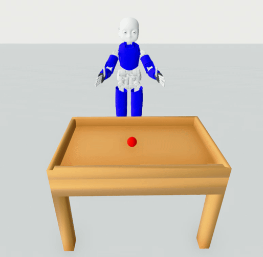

Řízení pohledu (Gaze control)
Cílem této úlohy je implementovat řízení pohledu (gaze controller) pro robota iCub, které dokáže sledovat míček pohybující se po stole. Úloha je zjednodušena na 2D případ (míček se pohybuje v osách x a y). K dispozici máte vektor z hlavy k míčku (kam se má robot dívat) a vektor směru, kam se robot dívá právě teď.

Úkol
Implementujte funkci gaze() v souboru exercise_3.py, která bude řídit pohled robota při sledování míčku.
Funkce přijímá tři argumenty:
client– instance třídypyCubovládající simulacihead_direction– normalizovaný vektor představující aktuální směr pohledu robotahead_ball_direction– normalizovaný vektor z hlavy robota směrem k míčku (cílový směr pohledu)
Funkce má ovládat krční klouby robota tak, aby sledoval míček:
pohyb musí být neblokující, tj. s parametrem
wait=Falsev této funkci nevolejte
update_simulation()
Bodování
Míček se pohybuje po dobu 10 s (výchozí nastavení) a v každém kroku se měří chyba ve stupních.
Maximální počet bodů je 10 (10 běhů); body můžete ztratit za jednotlivé běhy podle:
průměrná absolutní chyba:
< 0.5°– ztráta 0 % bodů0.5° – 1°– ztráta 50 % bodů1° – 5°– ztráta 75 % bodů> 5°– ztráta 100 % bodů
maximální chyba:
< 2°– ztráta 0 % bodů2° – 5°– ztráta 25 % bodů5° – 10°– ztráta 50 % bodů> 10°– ztráta 100 % bodů
Ztráty z průměrné a maximální chyby se sčítají (např. 75 % za průměr a 25 % za maximum znamená 100 % ztrátu a 0 bodů).
Požadavky
Pro správnou funkci testeru exercise_3_tester.py:
nevytvářejte nového klienta, použijte předaný argument
clientnepřejmenovávejte funkci ani soubor
používejte neblokující pohyby, tj. parametr
wait=Falsenebo rychlostní řízenív žádném místě kódu nevolejte
update_simulation()
Pro správné splnění úlohy:
Nevypínejte gravitaci